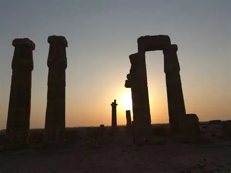

Путешествия и путеводитель по Судану
Судан предлагает уникальное сочетание древних цивилизаций, разнообразных ландшафтов и гостеприимства. С населением более 43 миллионов человек Судан является третьей по величине страной Африки и имеет богатую историю, насчитывающую более 5000 лет.
В стране находятся одни из самых увлекательных археологических объектов мира, включая древние пирамиды Мероэ и храмы Джебель-Баркал.
Разнообразные ландшафты Судана варьируются от обширных пустынь до вулканических массивов и плодородных речных долин, что делает его захватывающим направлением для путешественников.
Против Компаса +1 Тем, кто планирует поездку в Судан, важно учитывать текущие рекомендации по путешествиям и вопросы безопасности. Несмотря на трудности, теплый климат Судана, красивейшие пейзажи и гостеприимные люди делают его обязательным к посещению направлением для всех, кто интересуется исследованием чудес Африки.